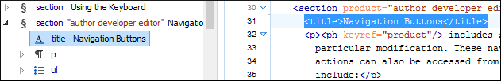
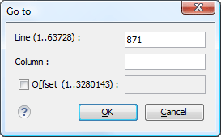
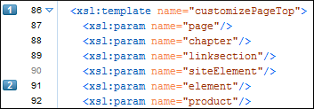

Oxygen XML Editor includes some useful features to help you navigate XML documents in
Text mode.
Navigation Keyboard Shortcuts
Ctrl + CloseBracket (Command + CloseBracket on OS
X)
Navigate to the next XML node.
Ctrl + OpenBracket (Command + OpenBracket on OS
X)
Navigate to the previous XML node.
Ctrl + RightArrow (Command +
RightArrow on OS X)
Navigate one word forward.
Ctrl + LeftArrow (Command + LeftArrow
on OS X)
Navigate one word backward.
Ctrl + Home (Command + Home on OS
X)
Position the cursor at the beginning of the document.
Ctrl + End (Command + End on OS
X)
Position the cursor at the end of the document.
Navigating to a Modification
Oxygen XML Editor includes some actions that help you to quickly navigate to a
particular modification. These navigation buttons are available in the main toolbar (they
can also be accessed from the Find menu):
Last Modification
Navigates to the last modification in any open tab.
Back
Navigates to the last selected editor tab or to the last selected element/content in
the current tab. You can also go back after clicking on links in
Text or Author mode.
Forward
Available after you use the Back button at least once, and it
navigates in the opposite direction as the Back button.
Navigating with the Outline View
Oxygen XML Editor includes an Outline view that displays a hierarchical tag overview of
the currently edited XML Document.
You can use this view to quickly navigate through the current document by selecting nodes
in the outline tree. It is synchronized with the editor area, so when you make a selection
in the Outline view, the corresponding nodes are highlighted in the
editor area.
Figure 1. Outline View Navigation in Text Mode

Using the Breadcrumb to Navigate
A breadcrumb on the top stripe indicates the path from the document root element to
the current element. It can also be used as a helpful tool to navigate to specific elements
throughout the structure of the document.
Figure 2. Breadcrumb in Text Mode
The last element listed in the breadcrumb is the element at the current cursor
position. The current element is also highlighted by a
thin light blue bar for easy identification. Clicking an element from the
breadcrumb selects the entire element and navigates to it in the editor area.
Navigating with the Go To Dialog Box
In Text mode, you can navigate precisely to a location in the
document you are editing by using the Go
to dialog box. To open this dialog box, press
(Ctrl+L (Command+L on OS X)) or select Find > Go to .
Figure 3. Go to Dialog Box

The dialog box includes the following fields for
specifying a specific navigation location:
Line - Destination line in the current document.
Column - Destination column in the current document.
Offset - Destination offset relative to the beginning of
document.
Navigating with Bookmarks
By using bookmarks, you can mark positions in an edited document so that you
can return to it later. This is especially helpful for navigating through large documents or
while editing multiple documents. You can place up to nine distinct bookmarks
in any document. Shortcut keys are available to navigate to any of the marked positions
(Ctrl+1 through
Ctrl+9). There are also shortcuts for
creating bookmarks (Ctrl+Shift+1 through
Ctrl+Shift+9). You can also configure these
shortcut keys in the Options > Menu Shortcut Keys menu.
Figure 4. Editor Bookmarks

To insert a bookmark in Text mode, do any of the
following:
Click in the vertical stripe on the left side of the editor (to the left of the line
number).
Press F9 on your keyboard or use any of
the specific bookmark creation shortcuts
(Ctrl+Shift+1 through
Ctrl+Shift+9).
Select the Create Bookmark action from the Edit > Bookmarks menu.
To remove bookmark in Text mode, do either of the following:
Left-click its icon in the vertical stripe.
Right-click its icon on the vertical stripe and select Remove
or Remove all (Ctrl+F7 (Command+F7
on OS X)).
To navigate to a specific bookmark, do either of the following:
Use any of the specific bookmark navigation shortcuts
(Ctrl+1 through
Ctrl+9).
Use one of the actions available on the Edit > Bookmarks > Go to menu.
Tip: The navigation shortcuts work even if the document where the
bookmark was inserted has been closed. In this case, using the shortcut will automatically
re-open the document.